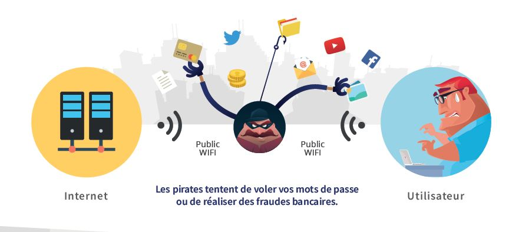

<!doctype html>


<html lang="fr">
    <head>
        <meta charset="UTF-8">
        <link href="css/style.css" rel="stylesheet">
        <title>Demo Html&CSS</title>
    </head>


</body>
</html>

   
    <body>
    	<header>
            
            <h1> Les dangers d'internet pour la société </h1>
            <p><strong>Sujet :</strong> Quelles sont les dangers d'internet et comment se protéger ?</p>
            

             <h4> SOMMAIRE : </h4>

                <ul>

                    <li classe = "btn">
                        <a href="#premierepartie"> Les dangers d'internet pour les enfants mais aussi les adultes </a></li>

                    <li classe = "btn">
                        <a href="#deuxiemepartie">Quel est le public le plus exposé aux dangers d’Internet ?</a></li>

                    <li classe = "btn">
                        <a href="#troisiemepartie"> Comment se protéger des dangers d’Internet ? </a></li>
                </ul>

           

        </header>
       
       
        
        <section>
        	
            <h2 id="premierepartie"> Les dangers d'internet pour les enfants mais aussi les adultes </h2>
            <p>Internet présente de nombreux dangers pour la société dans la mesure où chaque utilisateur fait personnellement recours au réseau tant pour le travail que pour ses recherches et besoins personnels. Les contenus ne sont pas censurés et chaque utilisateur est libre d’accéder aux programmes qui l’intéressent. C’est ainsi que des atteintes sont portées à la vie privée des utilisateurs et certains programmes d’apparence fiable ne le sont pas en réalité.</p>
            <p>Lorsque vous effectuez une recherche sur internet, caché derrière votre ordinateur, personne ne saura qui vous êtes, l’âge que vous avez ni même votre sexe. Encore qu’il est possible de s’identifier sous de fausses informations. C’est donc là le danger d’internet pour les jeunes, <strong>il n’y a aucune censure</strong> du coup ces derniers sont exposés à toutes sortes de contenus et à force de lire et de découvrir certaines réalités, ils peuvent être sujets à certaines frustrations.</p>
            <iframe width="560" height="315" src="https://www.youtube.com/embed/vtQ2zI1-4Kk" frameborder="0" allow="accelerometer; autoplay; clipboard-write; encrypted-media; gyroscope; picture-in-picture" allowfullscreen></iframe>
            
            <p>Ci-dessous un lien qui explique simplement les dangers.</p>
            <a href="https://www.1jour1actu.com/info-animee/safer-internet-day-comment-utiliser-internet-sans-danger">1jour, 1actu</a>
             
            
            
            
        </section>

        <section>
        	
            <h2 id="deuxiemepartie"> Quel est le public le plus exposé aux dangers d’Internet ?</h2>
            <p>Les principaux risques sont<strong> la pornographie, le harcèlement, les messages sexuels, la rencontre dans la vie réelle des personnes connues en ligne, les messages de haine, des images violentes...</strong>  Sur internet, les utilisateurs doivent être extrêmement vigilant, en particulier les jeunes qui forment la population la plus exposée et la plus ciblée par les prédateurs. Discussions à travers des messageries instantanées, jeux en ligne, participation à des concours et des sondages, leur mode d'utilisation en font de parfaites victimes . En terme d'arnaque sur le net, ce sont souvent les premiers à recevoir des cookies. Ils sont également exposés aux sites pornographiques, haineux ou véhiculant des informations douteuses et sans valeur.</p>
            <p>Les dangers d'internet pour les enfants en quelques chiffres.</p>
            <p><strong>-93%</strong> des 9-16 ans vont en ligne <strong>au moins une fois par semaine</strong> et 60% tous les jours ou presquetous les jours.</p>
            <p>-Les accès à internet se diversifient: 49% des jeunes l’utilisent dans leur chambre à coucher et 33% via untéléphone mobile ou un autre appareil portable.</p>
            <p>-Les enfants vont en ligne pour des activitées variées et potentiellement bénéfiques:les 9-16 ans utilisent internet pour le travail scolaire(85%), pour jouer à des jeux (83%),regarder des vidéo clips(76%) et pratiquer la messagerie instantanée(62%).</p>
            <iframe width="560" height="315" src="https://www.youtube.com/embed/6SFwcb9Y3lA" frameborder="0" allow="accelerometer; autoplay; clipboard-write; encrypted-media; gyroscope; picture-in-picture" allowfullscreen></iframe>

            
            
        </section>

        <section>
        	
        	<h3 id="troisiemepartie">Comment se protéger des dangers d’Internet ?</h3>
        	<p>Afin de protéger les utilisateurs de ces dangers, une commission nationale informatique et libertés (CNIL) a été mise en place en France. Son rôle est de vérifier le respect des droits de chacun : droit à l’information préalable en cas de constitution d’un fichier, droit d’accès aux informations individuelles, droit de rectification des erreurs... De plus, la CNIL dispose de moyens juridiques importants en cas d’infraction.</p>
        	
            <p>Il est possible de réduire les risques en protégeant avec soin ses informations personnelles publiées en ligne et en adoptant un comportement prudent.</p>

            <p><strong> On peut d'abord sécuriser les accès à nos différents comptes : </strong></p>

            <p>-choisir un mot de passe compliqué (mélange de lettres, de chiffres et de caractères spéciaux)</p>
            <p>-ne pas créer de combinaisons évidentes, comme prénom + date de naissance ou ville + département</p>
            <p>-créer un mot de passe différent pour chaque compte</p>
            <p>-ne pas cliquer sur des liens étranges issus d’emails reçus sans croiser les informations accessibles sur des sites d’avis ou des forums d’aide</p>

            <p><strong>Si une personne à des difficultés pour bien sécuriser ses comptes, il peut s'aider d'outils gratuits et payants pour se protéger :</strong></p>

            <p>-un filtre antispam est généralement présent dans les messageries gratuites, il suffit de férifier qu’il est bien activé</p>
            <p>-un gestionnaire de mots de passe permettra de garder tous ses mots de passe cryptés</p>
            <p>-pour les plus jeunes, un logiciel de contrôle parental empêchera l’enfant de saisir des données personnelles dans des formulaires et de se rendre sur des sites potentiellement dangereux</p>
            <iframe width="560" height="315" src="https://www.youtube.com/embed/gyhsfUDmUuo" frameborder="0" allow="accelerometer; autoplay; clipboard-write; encrypted-media; gyroscope; picture-in-picture" allowfullscreen></iframe>


        </section>


        <footer>
            <p> Site réalisé par Apolline Siebert  </p>
        </footer>
    </body>
</html>
